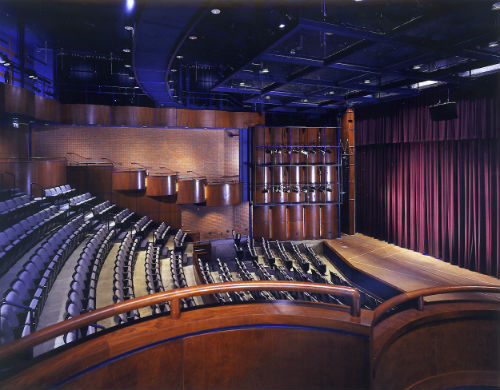

The 25 Most Amazing College Theaters
For those lovers of drama, performers of music and dancers of all kinds, passion for the arts is inspired by beautiful spaces, people and imaginative minds. The fall of the curtain, the first notes of an orchestra and the booming voices or pads of feet of performers make all the difference in the right theatre. Many people see their first shows at college theaters. They are the birthplace of imagination and feature some of the best architectural designs dating back to the early 1900s. While much of the theaters today are proscenium style, there are a few eccentric performance halls that look entirely different from their counterparts. Whether it’s a concept theater or traditional one, there are a few college theaters in the US that truly stand out. College students and national programs often use incredible college theater facilities because of their history, technology and architectural beauty. These top 25 theaters celebrate large spaces, history, unique architecture, impressive interiors and innovative designs.
25. Perelman Quadrangle, University of Pennsylvania

The Perelman Quadrangle is a collection of historic buildings that date back to 1871. This historic building is the center of entertainment for the campus, and it’s also one of the best places to see a show in Philadelphia. It’s the location of the first student union in the US, and it was originally designed by an award-winning designer. The Quad hosts a variety of performers, drama groups, traveling dancers and other entertainers throughout the year. The Irvine Auditorium is the most impressive part of the Quadrangle, and it’s where the all the arts magic happens. From the 1920s themed Gothic revival architecture to the incredible updated technology, it’s one of the best places to catch a show. The Iron Gate Theatre is another historic landmark theatre at University of Pennsylvania. With stained-glassed windows, carved angels and ornate masonry, it’s a wonder to behold and to watch a performance.
The Quad is also home to the ARCH auditorium which can seat 200 guests and works for both performing arts or conference events. The University of Pennsylvania has a variety of different performances ranging from jazz groups to Shakespearan plays and contemporary ballet.
24. Cutler Majestic Theatre, Emerson College

Emerson College is well known for its arts programs and its world renowned theater. The Majestic Theatre opened in 1903 and was originally designed by John Galen Howard. The grandeur of the theater hall is in its tall columns, stained glass facade and soaring arches. While the theater may have a classical look, it’s truly a wonder to behold on the inside where you’ll find ornate carvings of red marble, gold-leafed masks, geometric patterns, flowers and full-figured sculptures leaning down to greet guests’ eyes. It’s often said that The Majestic is an unusual performance hall because of its architect. He was known for challenging the norm and re-interpreting classical styles of architecture.
The Majestic is one of the few theaters in the country to display the Beaux Arts style architecture. With its incredible craftsmanship, eccentric details and grandeur, it’s another college theater that will truly stick with you after the performance.
23. Yale Repertory Theatre, Yale University

Founded by Robert Brustein in 1966, the Yale Repertory Theatre displays that classic New England architecture and has become a distinguished regional theatre in the area. It was actually recreated inside of an old building where the Calvary Baptist Church used to reside. The building is actually over 160 years old. While the outside is a simple brick facade with a tall tower, the theater provides seating for 467 guests and offers a more intimate setting for school plays. The Yale Repertory Theatre has celebrated 100 premieres and won two Pulitzer Prizes with four other nominated finalists. The nearby University Theatre is also an incredible theatre to see a performance from Yale students or traveling performers. The University Theatre was built in 1926 and has a more spacious auditorium.
22. The Center for Dramatic Art, University of North Carolina at Chapel Hill

The 40,000-sq. foot performing arts palace known as The Center for Dramatic Art hosts a variety of performances at the University of North Carolina at Chapel Hill. The Paul Green Theatre is the most modern addition with 500 seats. It was named after the Pulitzer Prize winner Paul Green. The theatre originally opened in 1978 but has received several upgrades. Guests also may find themselves in the Elizabeth Price Kenan Theatre, which is a smaller extension to the main theatre that allows for 200 guests. The theatre is a dynamic space on the inside and can accommodate all types of performance pieces. With state-of-the-art lighting and comfortable seating, it’s become a favorite place for free student entertainment in North Carolina.
21. The David and Louise Roselle Center for the Arts, University of Delaware

The David and Louise Roselle Center for the Arts was only recently built in 2006. Conceived by Ayers Saint Gross Architects and Planners. They are well known for designing high-tech educational and green buildings throughout the country. It features an incredible state-of-the-art auditorium that offers 90,000-sq. feet. The design of the proscenium theatre is particularly incredible with 450 seats including balconies. The facilities also feature several other rehearsal and smaller theatres to allow for various performers. The performance room is typically suitable for orchestras because of its high-end sound technology and features 300 seats.
20. Curtis M. Phillips Center, University of Florida

Located in Gainesville, Florida, the Curtis M. Phillips Center has a magnificent presence with a dazzling fountain at the front and all-glass window exterior. The facility hosts national and international artists from around the world as well as student plays, music groups, dance programs and other performances. It’s one of the largest college theatres in the nation with a 1,700 proscenium hall in addition to the smaller 200-seat Black Box Theatre. The Curtis M. Phillips Center was built in 1992 thanks to the The Barbara J. and Curtis M. Phillips M.D. Endowment Fund. The theatre resides in the University of Florida Cultural Plaza, which is also home to the Harn Museum of Art and the Florida Museum of Natural History. The Curtis M. Phillips Center hosts over a hundred different performances in a variety of genres each year.
19. Rockefeller Arts Center, State University of New York Fredonia

The Rockefeller Arts Center was originally designed by I.M. Pei and Partners in 1969. While there’s nothing particularly interesting about the modern buildings on the outside, the inside auditorium has maintained its glory with plush seats in a pristine proscenium hall. Recently, an expansion was announced for the Rockefeller Arts Center that will take the steel and concrete idea and turn it inside out. The new building will feature an impressive glass exterior with several new additions. The new facility will also boast an additional 60,000-sq. feet of space to add to the 160,000-sq. feet building. The expansion will also upgrade hallways, staircases, lobbies and studios to allow for better technology and space.
18. Historic Merle Reskin Theatre, DePaul University

When visiting Chicago, it’s hard to miss the historic and beautiful Merle Reskin Theatre of DePaul University. It’s a neighborhood landmark in the Windy City’s Loop that was originally built in 1910. While much of the city has changed around it, the Blackstone Theatre, as it was originally named, is used for the majority of theater and entertainment performances at the university. Originally designed by Marshall and Fox and John Drake of the Drake Hotel, which is another historic landmark in Chicago, the Reskin Theatre has a rich history of producing high quality, award-winning shows and showcasing the broad talents of its students. Before the theatre was built, the Timothy Blackstone mansion was located here. The theatre is six stories tall and features a French Renaissance architecture style. The Reskin has been renovated multiple times and most recently was upgraded to include a new orchestra pit, which reduced the seating count down to 1,325 instead of 1,400. If you’re ever in the Windy City, catching a performance at the Reskin will take you back in time to the roaring 1920s.
17. Michael Schimmel Center for the Arts, Pace University

As the main theatre for Pace University located in New York City in Lower Manhattan, the Michael Schimmel Center for the Arts always has a high attendance for its many performances. It was named after Michael Schimmel who donated most of the money to build the theater in the 1960s. The main entrance to the theatre features an all glass exterior. Inside, you’ll find the 743-seat theatre that has been home to several actors who were just getting their start. It’s also the set of the hit television show Inside the Actor’s Studio hosted by James Lipton. Some of the most famous actors and actresses have graced the stage here including John Goodman, Al Pacino, Billy Crudup and Jeff Goldblum.
16. Mason Gross Performing Arts Center, Rutgers University

It was a great leap forward for Rutgers University when the Mason Gross School of the Arts program was established in 1979. It was named after Mason Welch Gross, who had always supported building a center for the fine and performing arts at Rutgers. The center is home to several artistic spaces including the Nicholas Music Center, Victoria J. Mastrobuono Theatre, Philip J. Levin Theatre, Schare Recital Hall and others. The huge building provides ample space for jazz, classic music groups, theatre, dance and other student performers as well as national acts. Rutgers’ arts program has grown by leaps and bounds each year even making it on The Princeton Review’s top 20 college theatres list.
15. Skirball Center for the Performing Arts, New York University

If you live in New York City, it’s impossible to miss the grandiose Skirball Center for the Performing Arts in Manhattan’s Greenwich Village. It serves as the largest performing arts facility south of 42nd Street and plays host to a number of stage performances for NYU, Tisch School of Arts, national performing acts, conventions and international artists. It’s an extremely modern building that was only completed in 2003. The Skirball Center cost an estimated $40 million and was designed by architects Kevin Roche, John Dinkeloo and the Associates. The proscenium-style theater seats 860. The theater was named after Jack H. Skirball who was the head of the Skirball Foundation, which donated the funds in order to build the rather large performance hall.
14. Lydia Mendelssohn Theatre, University of Michigan

The Lydia Mendelssohn Theatre is a historic performance space located in the Michigan League building on the University of Michigan campus. It’s a rather intimately designed shoe box theater that seats 644. The design features solid oak paneling, which adds to the classical beauty of the space. The theatre is only used for theatrical productions and solo recitals. The Mendelssohn Theatre was originally unveiled in 1929 and was designed by Allen Pond & Pond and Martin & Lloyd. The film received updated seats, carpeting, lighting and proscenium curtain in 1995. The main feature of this theatre that makes it so special is that it’s one of the only ones to have a “cyclorama,” which is a curved wall at the back of the stage. Overall, this provides better sound in the theater, but it’s also an innovative way to achieve spectacular lighting effects.
13. Theatre & Interpretation Center, Northwestern

There are a number of things to love about the collection of theatres at Northwestern’s TIC or Theatre & Interpretation Center. The largest of all is the Ethel M. Barber Theater, which is a thrust stage design with 450 seats. There’s also the Josephine Louis Theater, which is a traditional proscenium theater that has 350 seats. The Center also makes room for two small black box theaters and a dance performance hall. TIC was originally built in 1980 and features a strange boxy, all-white shape that received the nickname “The Box The Library Came In” as Northwestern’s library is right next door. About 40 products per year are held at TIC with about eight of these being held on the main stage at Barber Theatre. Most of the productions are directed by MFA students and guest artists. Two legendary events are held here including Waa-Mu and Summerfest, which are written and performed by students.
12. Regent Theatre Complex, Syracuse University

While University Hill is the center location for the artistic showcase at Syracuse, the Regent Theatre Complex is the crowning jewel. It houses the Department of drama and contains three theaters as well as a cabaret space. Theatres include the John D. Archbold Theatre, which is the largest of the three traditional theatres and has 499 seats in a proscenium-style theater. The Arthur Storch Theatre features 200 seats in a smaller proscenium design, and the Black Box Laboratory Theatre is the more intimate and flexible performance space that is used for shorter plays and experimental projects that is almost exclusive to students. The Sutton Pavilion is a flexible cabaret space that mostly features night entertainment for the university. Each year, hundreds of events are held here that span all types of genres. Whether you are looking for dance, drama, visual arts, music or orchestra performances, you’ll find something going on in this famed artistic space of Syracuse.
11. The Perry and Marty Granoff Center for the Creative Arts, Brown University

One of the more recently built performance theaters is the Perry and Marty Granoff Center for the Creative Arts located at Brown University. The building has several state-of-the-art technological features that were integrated into the architecture by well-known designers Diller Scofidio + Renfro. The floor plan is a little bit different than what you’ll find at most performance spaces, but it’s meant to promote a mixture of the artistic performances held by students. The exterior is something to behold with as its design is quite contemporary with raised zinc panels and floor-to-ceiling windows that span up four floors. The interior is equally designed and allows for maximum sound and lighting effects.
10. Blanche M. Touhill Performing Arts Center, University of Missouri at St. Louis

Another structure by I.M. Pei, the Blanche M. Touhill Performing Centers officially opened in 2003 and has been used by students for dancing, theater and media performances. A number of national and international artists also perform here regularly. The outside of the building is quite uncomplicated, but it opens up into a very expansive space with 1,625 seats in the main performance hall. The design is quite like a 21st century European opera house and features all of the modern technology to put on an incredible show. The center of the builder has allows for a much smaller theater with only 300 seats. Classrooms and recital halls are also located among its extensive hallways.
9. Hylton Performing Arts Center, George Mason University

As one of the most recent theaters to be built, the Hylton Performing Arts Center is an impressive performance hall that was unveiled in 2010. Many donors and founders came together to fund the building, which is an impressive 85,000 square feet architectural wonder. Multiple types of performances are held here. The Merchant Hall opera house is the largest space, but there’s also the Buchanan Partners art gallery and Gregory Family Theater, which are used mostly by students to showcase short performances, solo acts and visual art pieces. The Merchant Hall offers 1,123 seats and is an elegant opera house with a large 100-foot stage and orchestra pit. Symphonies, operate, drama, dance and even bluegrass performances are held here regularly. The building is an architectural splendor with copper, wood and concrete materials that mix with red and purple theme decor. The opera house is a modern space, but it also has those traditional proscenium elements that every theatre lover appreciates.
8. Marjorie Walter Goodhart Theater, Bryn Mawr College

If you want to see something different, then you’ll have to stop by Bryn Mawr College to experience the Marjorie Walter Goodhart theater. Its design was conceived by Arthur Meigs. The performance center hosts a rather large auditorium with Gothic arches that make it the defining feature of the space. There are also intimate performance spaces, classrooms and offices. The building may have been inspired by Grecian architecture as it features friezes, carvings, gables and ornate ironwork throughout. It’s the only Gothic revival college theater in the US, and it’s worth viewing over the 100 some-odd plays, dance programs, jazz ensembles, classic music and other entertainment in its rather unique setting.
7. Mashouf Performing Arts Center, San Francisco State University

While it’s not finished yet, the Mashouf Performing Arts Center at San Francisco State University looks to be one of the most modern and well-designed theater halls in the United States. The design is taking place in three phases and is considered a landmark project for the University. The building has been designed by Michael Maltzen Architecture and will feature a finished product that is U.S. Green Building Council LEED “Gold” certified. Much of the concept revolves around a sustainable and responsive design that be a completely contemporary take on the traditional performance theatre. When completed, the facility will comprise nearly 170,000 square feet and consider of 1,200-seat theater and orchestra hall, 450-seat thrust stage, 300-seat music recital hall, several practice rooms, production facilities, audio recording studio, interactive media stations, classrooms and offices. The date for completion is not yet available, but construction has already started for the first phase.
6. Murchison Performing Arts Center, University of North Texas

The Murchison Performing Arts Center is an architectural wonder on the outside and inside. The exterior will stop you in your tracks with a centipede construction and pentagonal window. The building was originally unveiled in 1999 as part of the University of North Texas College of Music. It features two large performance areas including The Margot and Bill Winspear Performance Hall and Lyric Theatre. The inside of the building is just as enchanting as the outside with ribbed vaulting and an extraordinary lighting system that makes performances truly wonderful to watch. The performance hall is home to all types of performers including national and regional entertainers. If you haven’t stopped by for a performance or seen the building, it’s one of the best sights to see in North Texas.
5. Purdue Theatre and Elliott Hall of Music, Purdue University

It all started with the Harlequin Club in 1907. Theatre has always been one of the main aspects of Purdue University that has kept student art culture alive and thriving. The new theatre began construction in 2001 and includes four divisions that make up the Visual and Performing Arts department at Purdue including art and design, music, theatre and dance. The exterior of the building is a bright architectural space with lots of windows, light and modern design features. The building features the Carole and Gordon Mallett Theatre, which is a flexible performance space suitable for small projects. There’s also the Nancy T. Hansen Theatre, which is a 300-seat proscenium theatre. The Elliott Hall of Music is one of the largest proscenium theaters in the world and has just over 6,000 seats. It was completed in 1940 and cost $1,205,000. It was renamed in honor of Elliott in 1958.
4. Rarig Center, University of Minnesota

The location of the Rarig Center on the University of Minnesota campus is what makes it one of the top five most amazing college theaters in the US. The center includes four theaters that include state-of-the-art design by Ralph Rapson who also designed the partner performance hall Guthrie Theater. The Kilburn Arena Theatre seats 200 and provides an intimate space with sprung floor overtop and original wood hexagon floor. The Whiting Proscenium Theater is a the most flexible and large theater on campus that features the latest performances by students and national entertainers alike. The Stoll Thrust Theatre is the largest of all the spaces and yet is designed to be rather intimate. It looks just like the original Guthrie Theatre. Its interior design was meant to look like the “Alpine Slope.” The Nolte Xperimental Theatre is a black box theatre that is run by an all-student organization. Each of these spaces provides an ideal performance space for students and caters to all of the visual and performing arts genres at the University of Minnesota.
3. Valley Performing Arts Center, California State University at Northridge

Minimalism is the word of the day when you first see the theater structure of Valley Performing Arts Center at Cal State. The main stage has been used by both students and famous performers like Bernadette Peters, Jamie Lee Curtis and the New York Ballet. Even if you don’t plan on seeing a show here, it’s worth it to stop by and see the incredible architecture featured on the inside and out of this building. The $125 million theatre was designed as a centerpiece for the university campus and opened in January 2011. The curved glass exterior is only one facet to admire about the design of this building. It’s also LEED Gold certified and seats 1,700. A smaller 175 seat theater is also located here.
2. Carnegie Mellon University Theatre, Carnegie Mellon University

The Carnegie Mellon School of Drama is one of the most prestigious and oldest collegiate drama programs in the United States. In 2000, the Purnell Center of the Arts was unveiled and revealed an incredible acoustic architecture specifically for the state. It was designed just for the School of Drama at Carnegie and is now the home of the department. In this space, you’ll find the Philip Chosky Theater, which boasts 430 seats in a proscenium-style space. The Helen Wayne Rauh Studio Theater is a smaller black box theater with 140 seats. The John Wells Video Studio is also located here and is exclusively used for sound stage television production. The Philip Chosky Theater is a flexible space and easily changes into a thrust stage when needed.
1. Richard B. Fisher Center for the Performing Arts, Bard College

You’ll find this performance hall gem in New York’s Hudson Valley. It’s a unique performance space specifically for students studying opera, dance, drama and music at Bard College. International performers also stop by to perform every year. The design originally comes from Frank Gehry and features his characteristic style of curved spaces, metallic surfaces and hefty price tag. The rather unique style of this building cost $62 million to create. Upon its opening, the small theatre was named the best small concert hall in the United States by The New Yorker. There is a large main theater and a smaller stage for more private or short performances that is mostly used by students. The exterior of the Richard B. Fisher Center for the Performing Arts is eccentric and delightful to behold, but it hides a traditional elegance inside that makes its main theater an incredible place to watch a performance.


{kind=link}